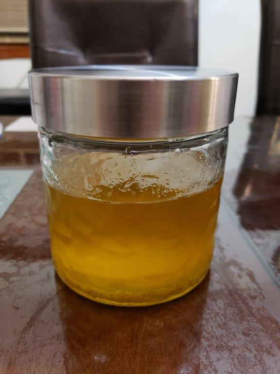

Ghee

Ingredients:
Instructions:
- In a sauce pan over high heat, melt the butter and bring it to a boil.
- Turn the heat down to low so that the butter is at a gentle simmer. The milk solids will at first foam on the surface of the butter. After 15-20 minutes, the milk solids should start to sink to the bottom of the pan rather than floating on the top of the pan. The bubbles will also get larger and the sound of the bubbling ghee will start to sound like popcorn.
- Once the milk solids have settled to the bottom and lightly browned, remove the ghee from the heat and let rest for about a minute or until it is no longer popping. Slowly pour the ghee through a strainer and into a jar.